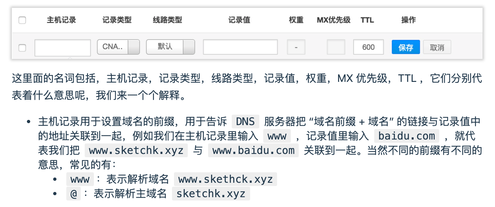

Welcome to Jekyll!
折腾两天才搞起来这个blog，还是比较费劲的，大体参考了这几篇文章 利用GitHub Pages建立项目或个人网站 GitHub+Jekyll搭建个人博客详解 其中遇到的一个问题是mac本身自带了ruby，然而和python一样，各种不让动，brew又装了一个，path加了下才起来 然后直接用别人的模版，结果发布总是失败，github这一点太操蛋了，不提示什么原因，本地都是能起来的，没办法只能做成最简单的版本了 jekyll和hexo等对图片的支持都不好，尤其是要权衡本地preview md和github发布的版本，最终参考了如下的文章 jekyll图片管理插件
买了个便宜的域名，参考了A Guide Of Making Your Personal Blog 系列 有些重要的地方记录下来 